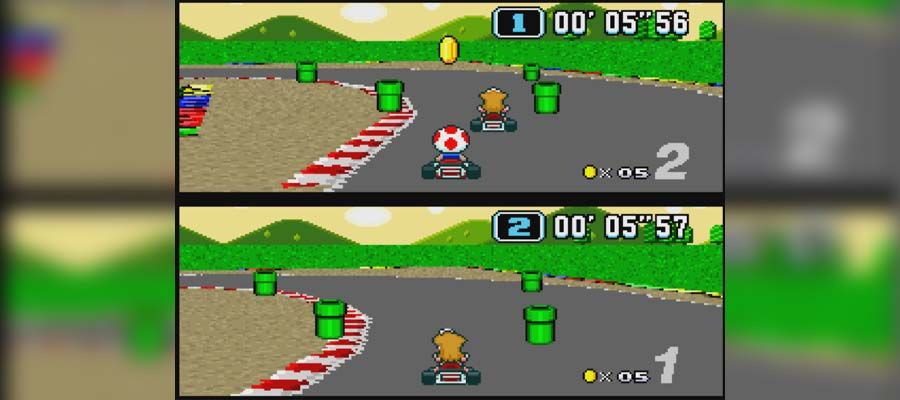

Super Mario Kart

Super Mario Kart (スーパーマリオカート Sūpā Mario Kāto?) é um jogo eletrônico de corrida com personagens da série Mario lançado em 1992 para o Super Nintendo. Foi relançado em 1996 como Player's Choice, em 2009 para o Virtual Console do Wii e em 2019 para Nintendo Switch, para assinantes do Nintendo Switch Online. Foi o primeiro jogo de corrida da série Mario Kart, que acabou tornando-se uma das séries mais famosas da Nintendo.
Há oito personagens jogáveis em Mario Kart. Além deles, outros personagens da série Super Mario surgem no jogo. Piranha Plants, Monty Moles, Thwomps e Cheep-Cheeps surgem como obstáculos. Entretanto, os temidos e imortais fantasmas Boos surgem como um item, utilizado apenas nos modos Match Race e Battle Mode. Lakitu é o proprietário e fiscal de prova de todas as pistas, e participa ativamente das corridas exercendo várias funções, como segurar o semáforo, bandeiras e placas. Pelo preço de duas moedas, Lakitu usa sua vara de pesca para resgatar os corredores de abismos, lavas e água.